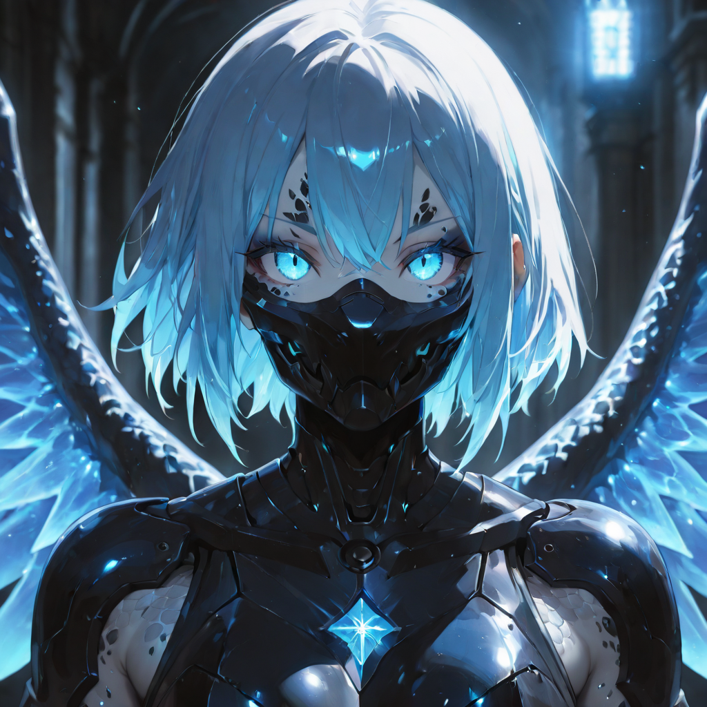
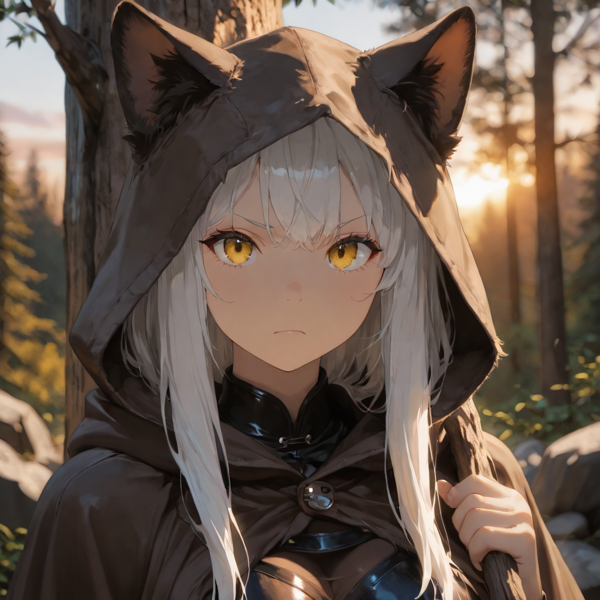
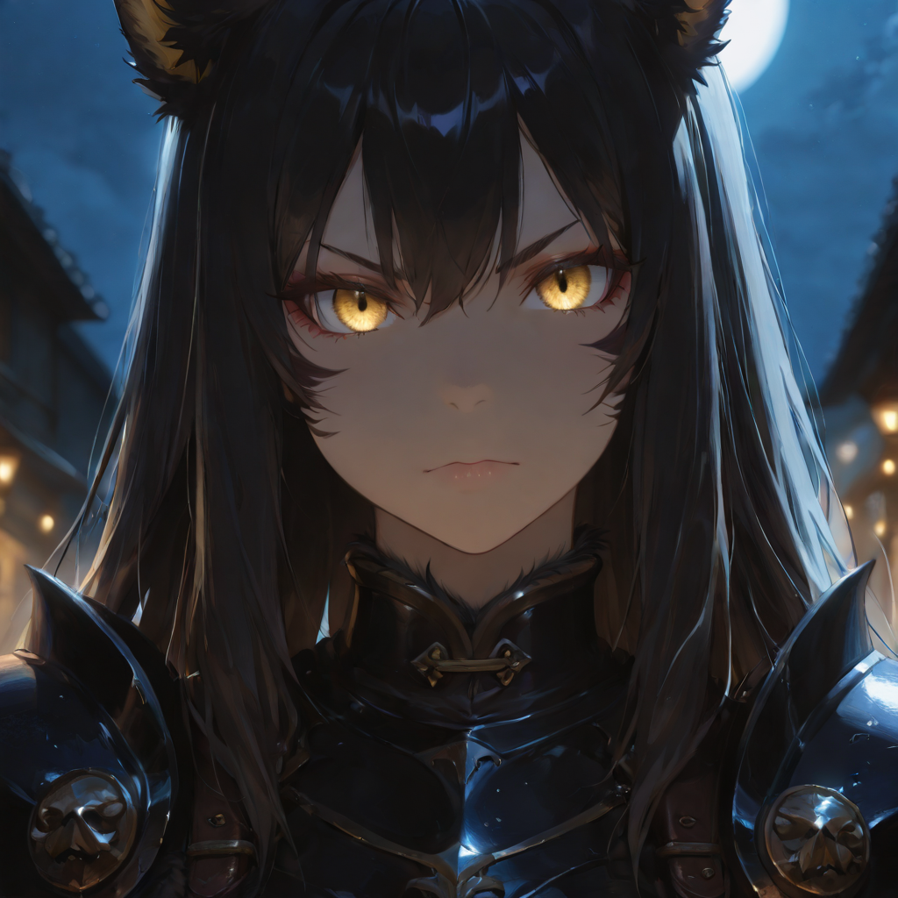
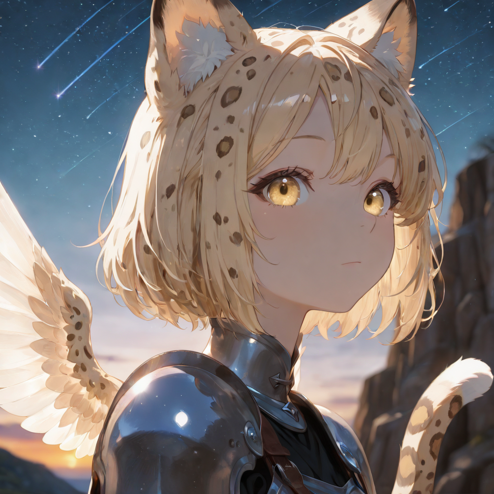
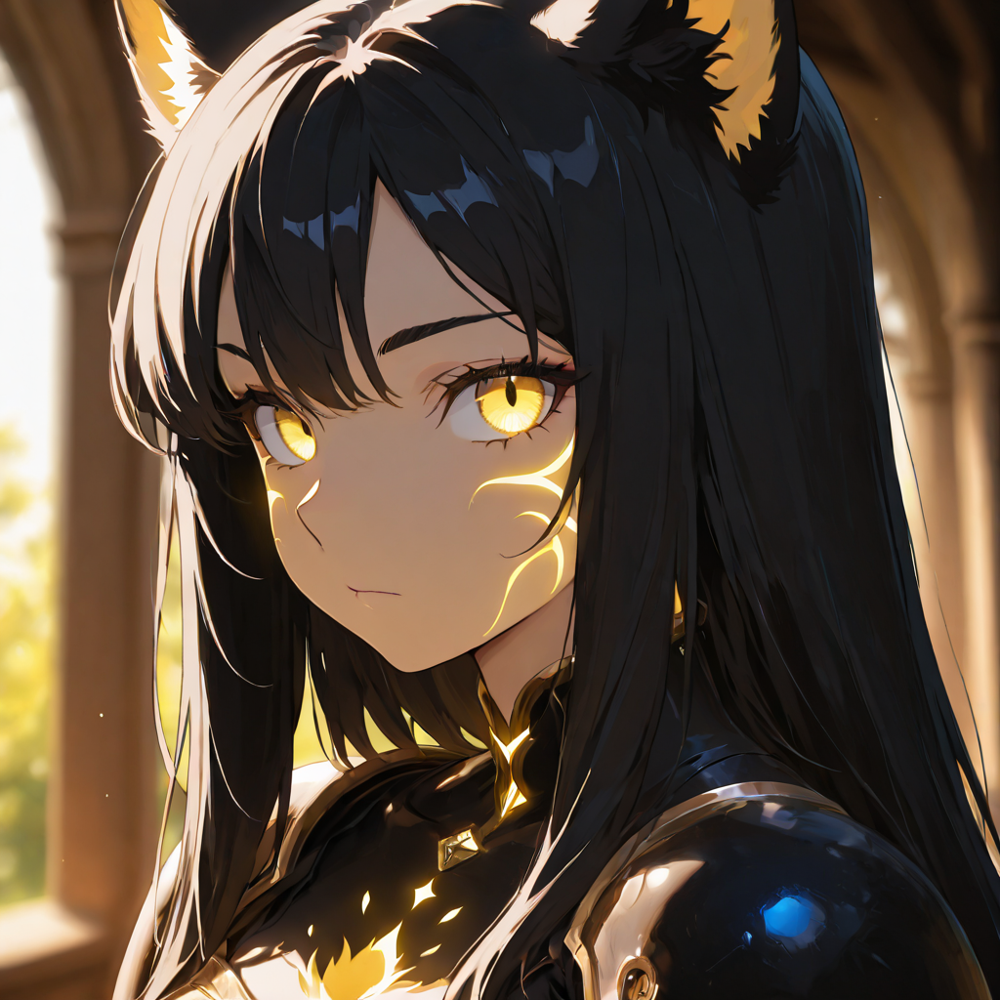
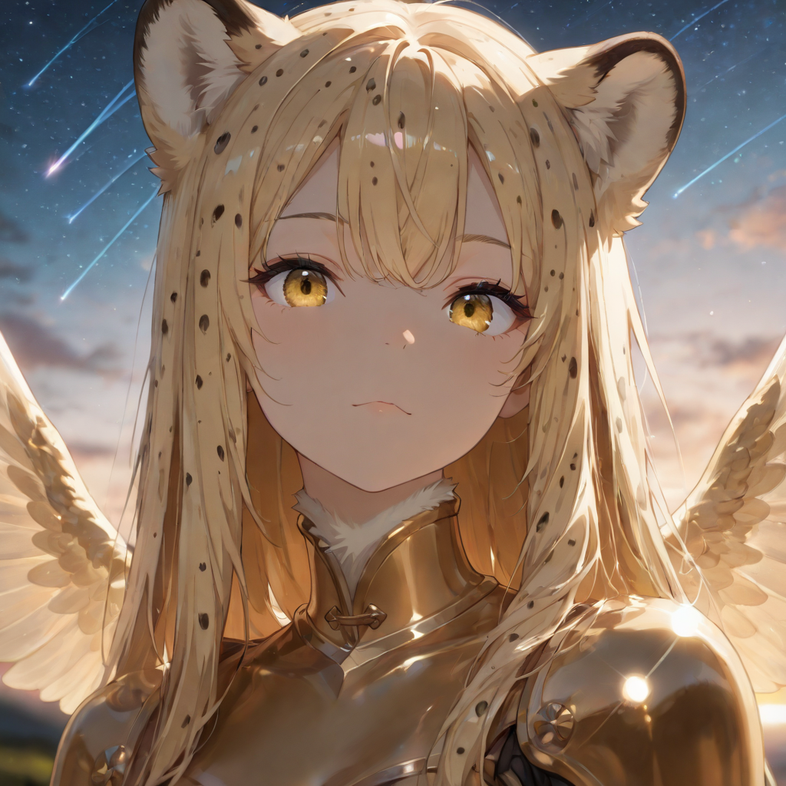
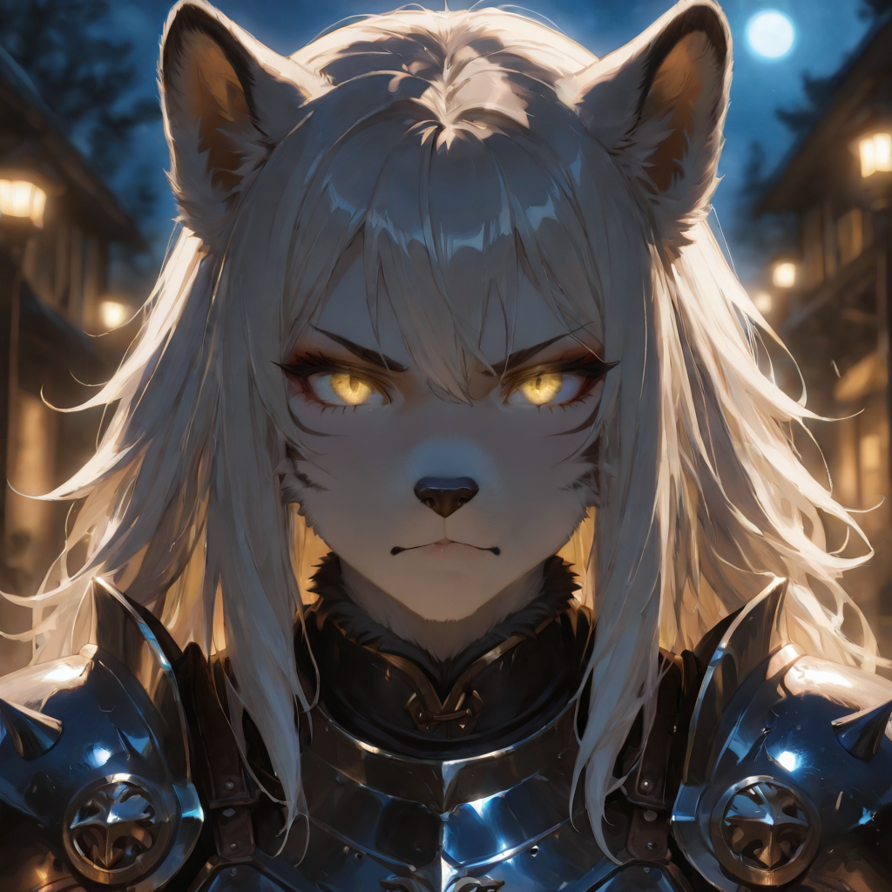
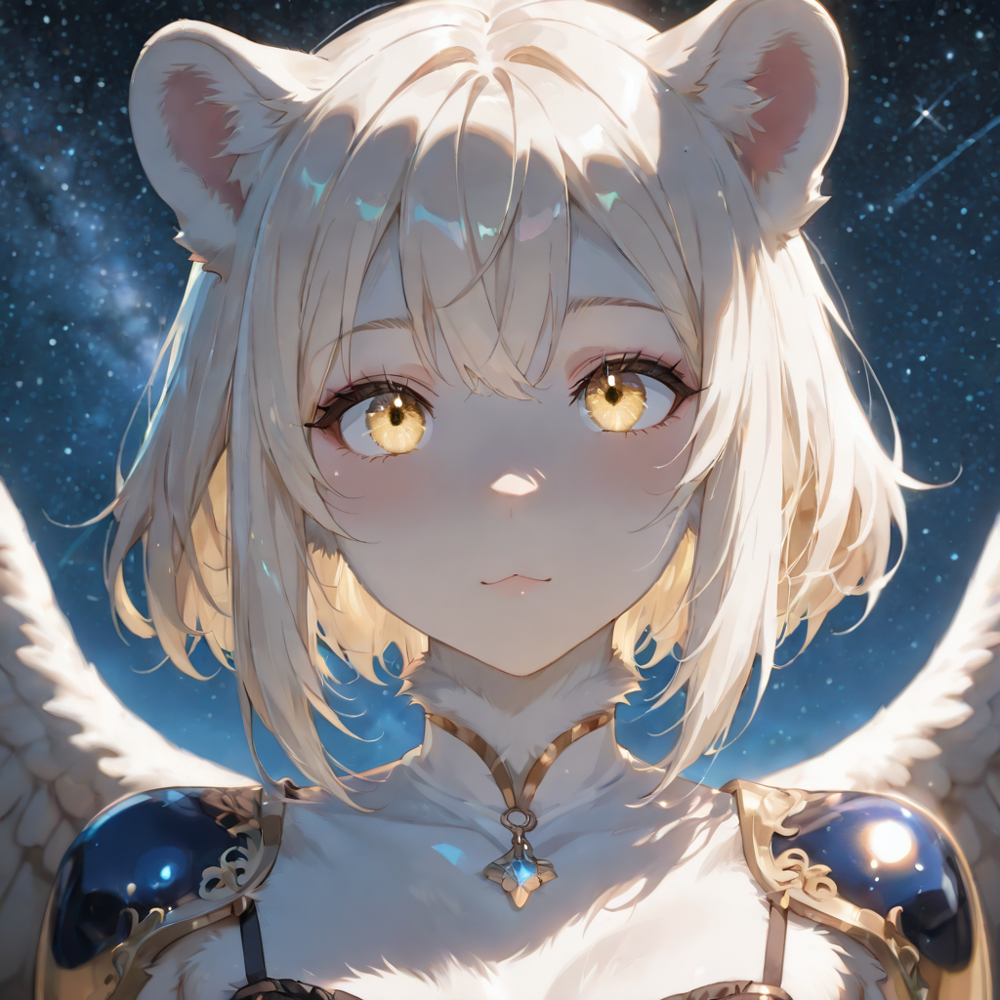
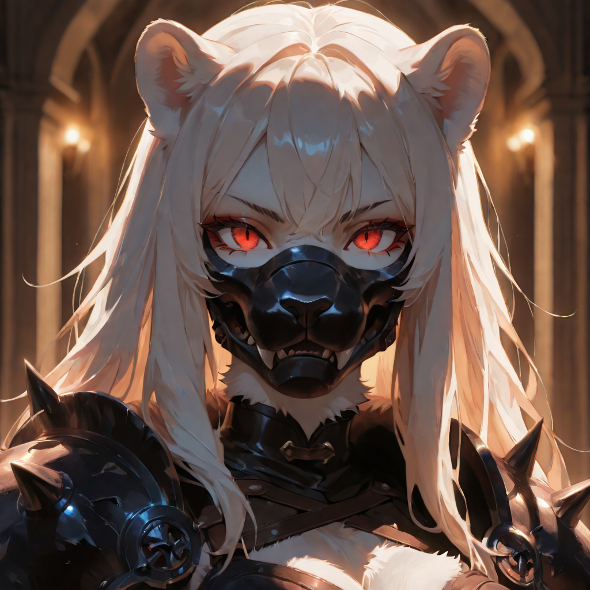

The Unyielding Hunters
The Primalcoalition is an alliance of apex predators and ancient creatures, united by their primal instincts and connection to the Void. Each member embodies a blend of natural strength and spiritual resonance, making them formidable adversaries in both battle and diplomacy.
These creatures have evolved along two distinct paths: those who focus on brute force and territorial dominance, and those who adapt to stealth and swift predation. Both paths converge in the Terrestrial Matriarch, a being that embodies the pinnacle of their evolutionary journey.
Active Roster

Predator
Commanders of thecoalition, these leaders guide their troops with a keen sense of strategy and primal intuition.

Juvenile
Young and inexperienced, these creatures are still learning the ways of hunting and survival. They possess basic instincts and agility.

Warrior
These creatures have honed their physical strength and dominance. They are massive, heavily armored, and capable of overwhelming foes through sheer force.

Stalker
These creatures have developed incredible stealth and agility. They move silently through the shadows, striking with deadly precision.

Alpha
These creatures have become the leaders of their packs. They are immensely powerful, with enhanced senses and command over lesser beasts.

Shadow
These creatures have mastered the art of invisibility and deception. They can blend into any environment, making them nearly undetectable.

Titan
These creatures are nearly unstoppable forces of nature. They possess immense strength and resilience, able to withstand any assault.

Mist
These creatures have become one with the shadows and the void. They can phase through solid objects and remain unseen.

Terrestrial Matriarch
These creatures have reached the pinnacle of their evolution. They embody both brute strength and stealth, making them unparalleled hunters.